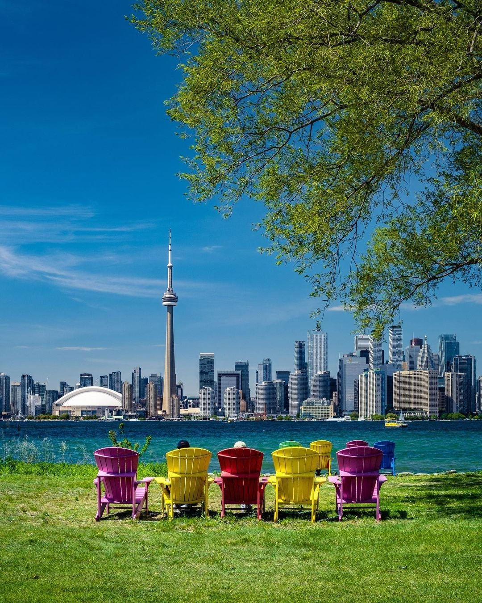
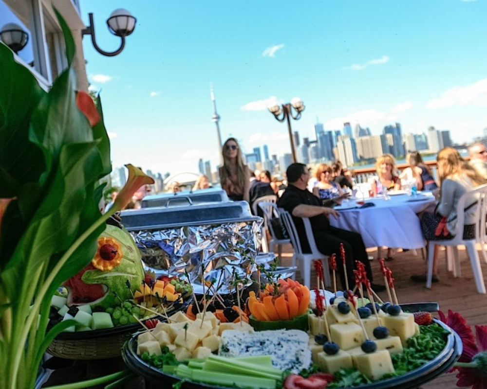
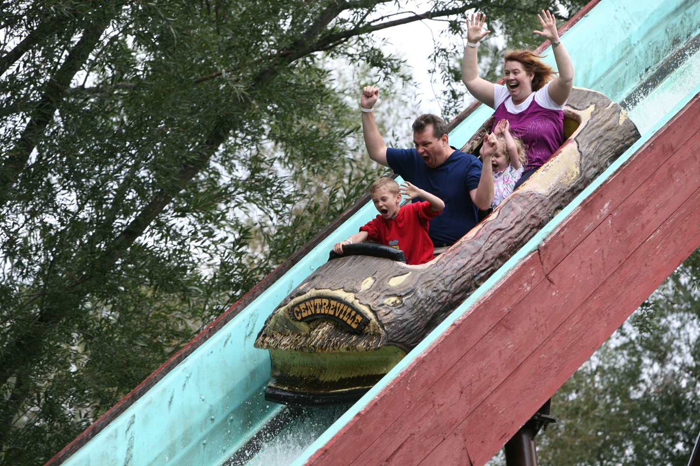
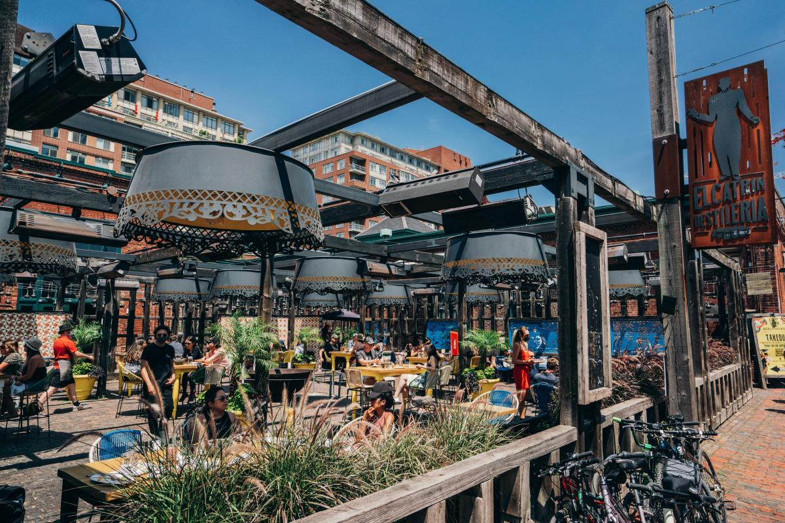
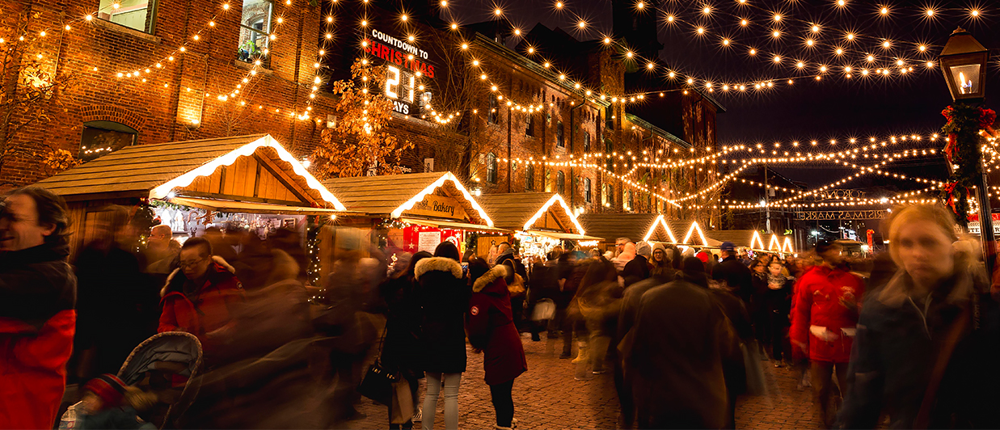
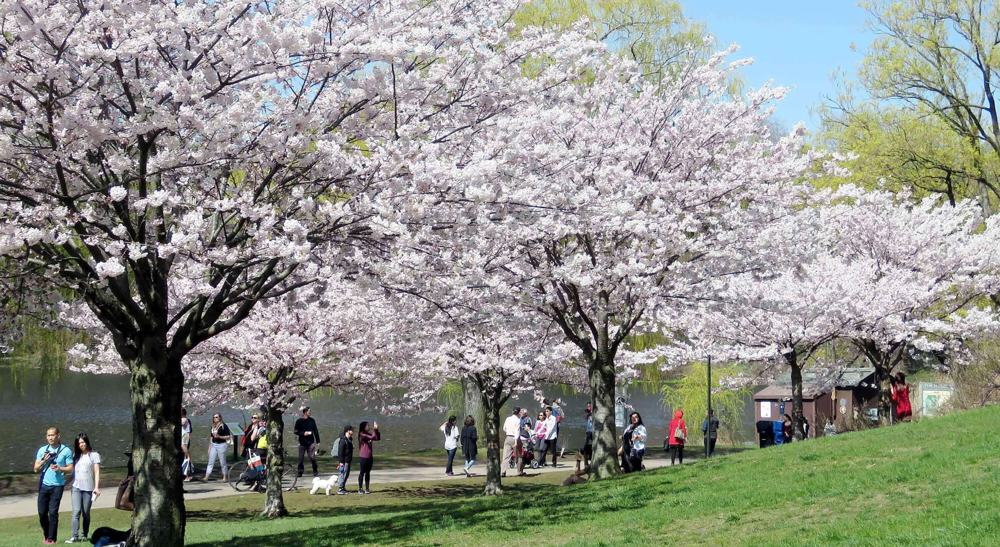
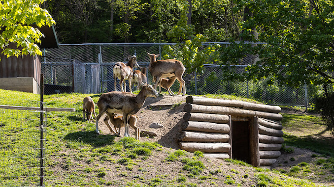
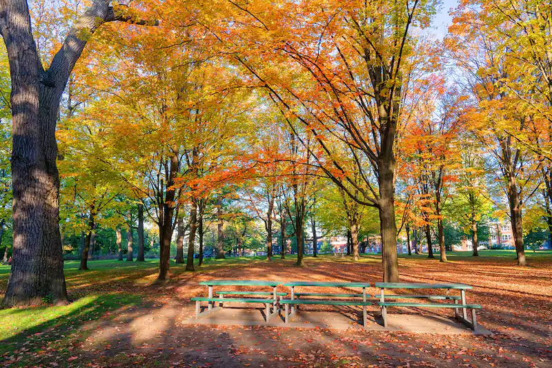

Toronto Islands
History
The Toronto Islands originated from eroded deposits of sand, silt, and clay from the Scarborough Bluffs. They offer a serene escape from the bustling city and have been a popular destination for recreation for over a century.
Directions from Seneca Newnham Campus
- Walking: Not recommended due to the distance.
- Driving: Head southwest on Finch Ave E toward Don Mills Rd, then take the Don Valley Pkwy S, Gardiner Expy W and exit at Bay St to Queens Quay W.
- Transit: Take bus 199A towards Finch Station, transfer to Line 1 Subway towards Vaughan Metro Centre, exit at Union Station and walk to the ferry terminal.
What to Do/Eat/See
- Relax at the sandy beaches, especially Hanlan’s Point.
- Visit Centreville Amusement Park.
- Dine at the Island Cafe for fresh and local delicacies.



Distillery District
History
The Distillery District is a national Historic Site with an incredibly rich history. It was once the home of the largest distillery in the British Empire, the Gooderham & Worts Distillery.
Directions from Seneca Newnham Campus
- Walking: Not recommended due to the distance.
- Driving: Head southwest on Finch Ave E toward Don Mills Rd, then take the Don Valley Pkwy S and exit at Richmond St E/Downtown.
- Transit: Take bus 199A towards Finch Station, transfer to Line 1 Subway towards Vaughan Metro Centre, and exit at King Station. Walk or take a streetcar east.
What to Do/Eat/See
- Visit the numerous art galleries and design boutiques.
- Dine at El Catrin for amazing Mexican cuisine.
- Enjoy a stroll amidst Victorian architecture.
- During the wintertime, the Distillery District transforms into a magical wonderland for its annual Christmas Market. Visitors can wander through the cobbled streets lined with sparkling lights, festive decorations, and wooden vendor stalls selling unique crafts and holiday gifts.
- When summer arrives, the Distillery District hosts an open-air cinema, where classic films and new releases are projected onto a big screen under the stars.


High Park
History
High Park was opened to the public in 1876 and is based on a bequest of land from John George Howard to the City of Toronto. It's the city's largest park and has been a beloved place for relaxation and recreation ever since.
Directions from Seneca Newnham Campus
- Walking: Not recommended due to the distance.
- Driving: Head southwest on Finch Ave E toward Don Mills Rd, then take the ON-401 W and exit at Bloor St W/Downtown.
- Transit: Take bus 199A towards Finch Station, transfer to Line 1 Subway towards Vaughan Metro Centre, and exit at High Park Station.
What to Do/Eat/See
- Experience the cherry blossoms in the spring.
- Visit the High Park Zoo, which is open every day from 7:00 am to dusk.
- Relax by Grenadier Pond.


